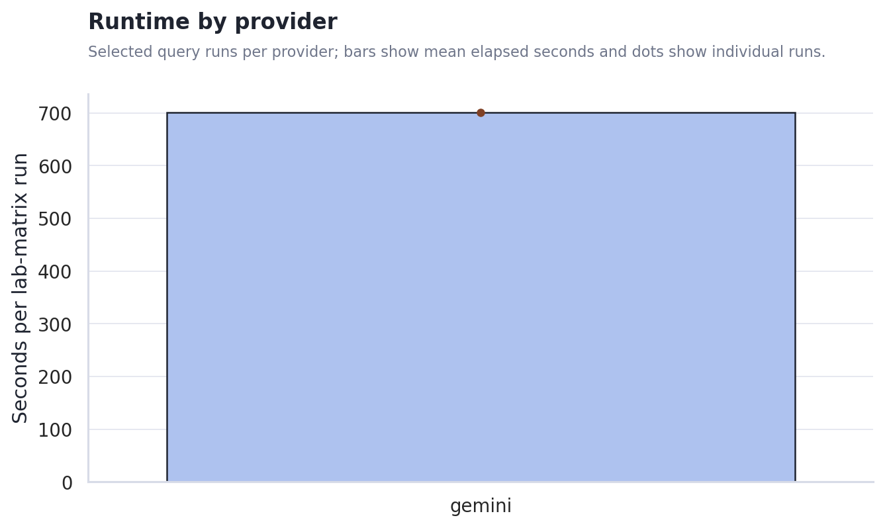
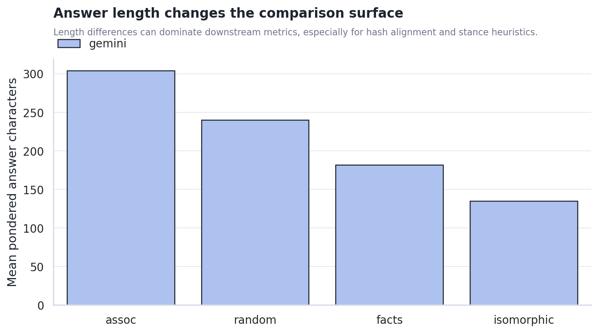
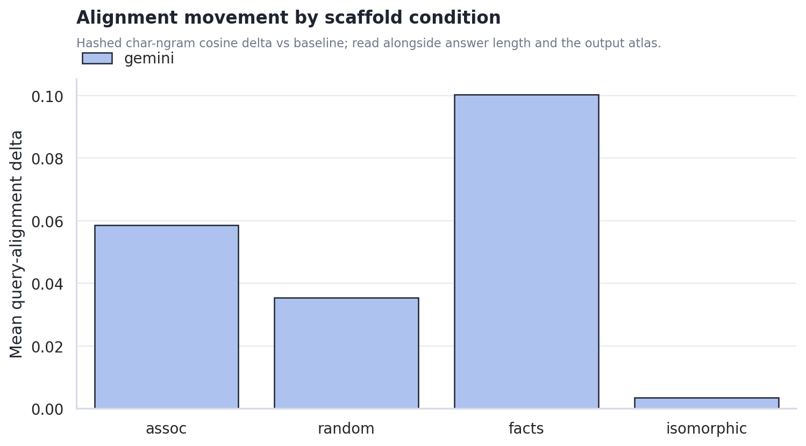
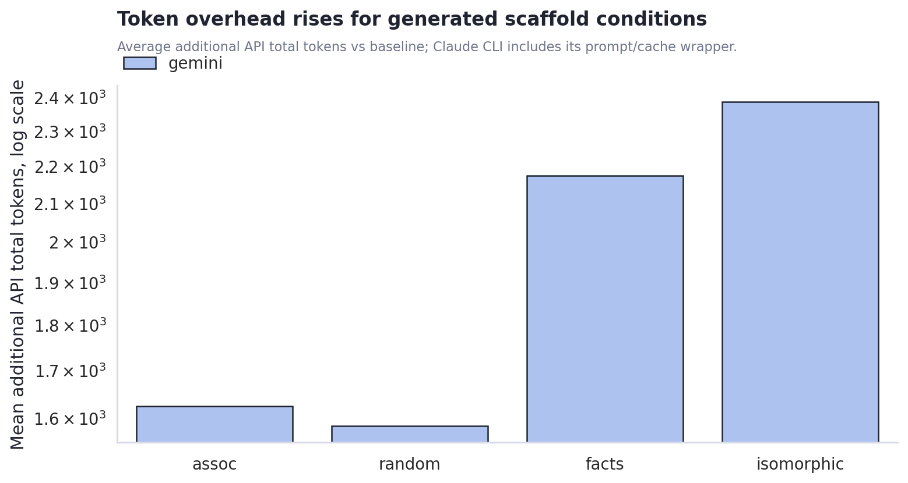
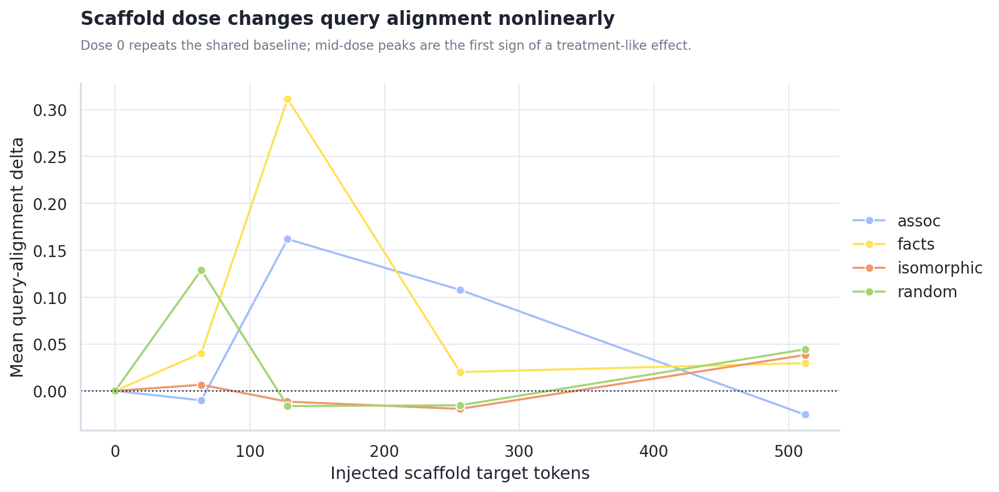
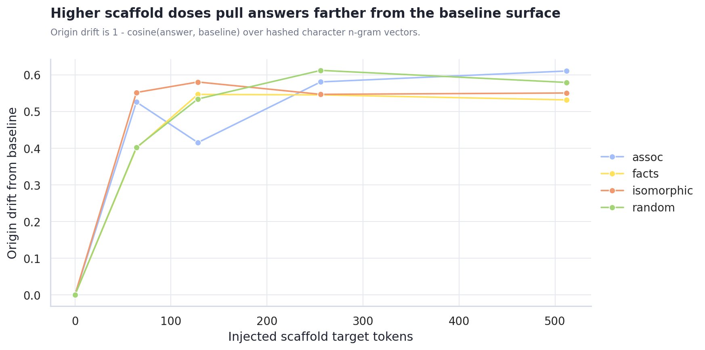
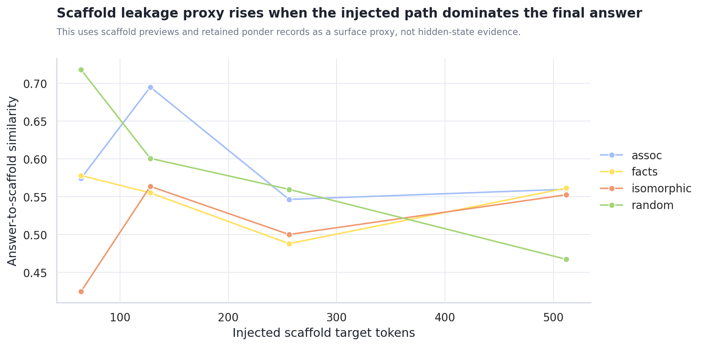
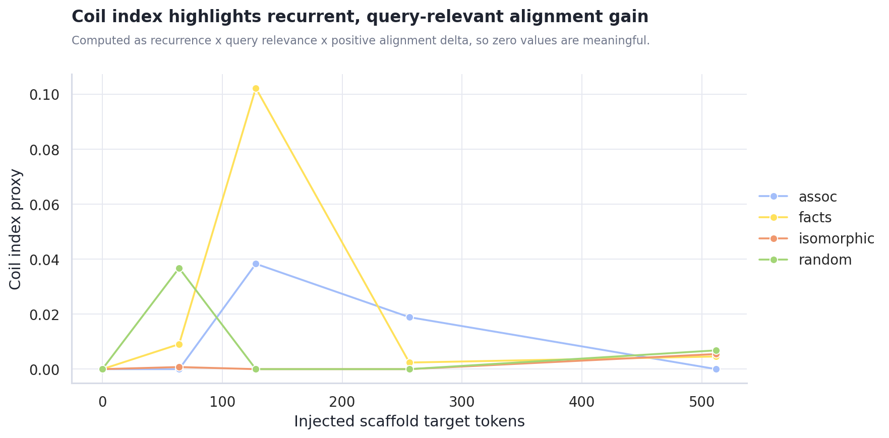
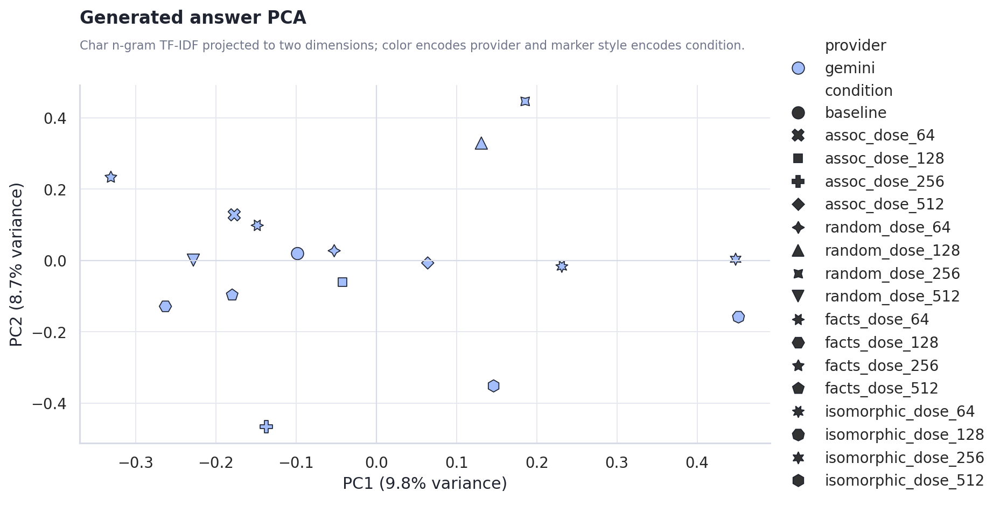

Scaffold Dose Ladder Sweep
Generated 2026-06-19 14:55 from the local sweep artifacts.
Executive Summary
- 1 lab-matrix runs completed cleanly. The sweep produced 16 pondered comparison rows across gemini-3.1-pro-preview, plus per-run JSON, trace, and matrix artifacts.
- gemini ran as the focused comparison lane. Mean runtime was 701.4s and pondered answers averaged 215 chars.
- Alignment lift is a triage signal, not a verdict. Mean query-alignment delta for gemini was 0.049; read that alongside answer length, PCA position, and the raw output atlas.
- Dose ladder metrics are now part of the report. The strongest alignment row was
factsat dose 128 with alignment delta 0.311; verify it against origin drift, leakage, and the raw text.
Runtime and answer length frame the dose ladder
Runtime is part of the experimental surface. This focused run uses one provider lane, so runtime is mainly a planning handle for larger dose ladders.

The output-length gap shapes the first read. Stance, metaphor-density, and hash-alignment heuristics become easier to interpret when answer lengths are comparable; when they are not, the raw output atlas and PCA view matter more than a single scalar.

Scaffold condition changes the metric surface, but not all changes are meaningful yet
Alignment deltas moved by condition. The chart shows where each scaffold condition pulled answers closer to or farther from the original query surface. This should guide the next experiment design rather than be read as a final claim about model cognition.

Cost rises where the machine asks the model to synthesize a new scaffold. The plain associative and random controls are cheaper; facts and isomorphic require extra generation and larger final contexts.

Scaffold Dose Response and Attractor Proxies
Dose 0 is the shared baseline reference. The ladder then varies injected scaffold target tokens by condition, making it easier to see weak-injection, useful-intervention, and takeover-like regimes separately.




Use dose_response_metrics.csv for dose rows and attractor_metrics.csv for step drift, origin drift, recurrence, leakage proxy, and coil-index rows.
Generated Content PCA
The PCA view treats each final answer as a document, hashes character n-gram TF-IDF features, and projects them into two dimensions. This is not semantic truth, but it is useful for spotting whether provider, prompt, or scaffold condition dominates the generated surface.

Provider centroid distance in PCA space: n/a. Use answer_pca.csv for row-level inspection.
Recommended Next Steps
- Use closure markers as a diagnostic, not a quality score. They show whether Gemini landed the output; they do not prove the answer is better.
- Normalize answer-length targets before making provider claims. Require a minimum answer length, or stratify metrics by length band.
- Use the output atlas as the qualitative inspection lane. The charts show surface movement; the actual generated text shows whether the movement is meaningful.
Actual Output Atlas
Each provider/query run below includes the full final answers stored in the result JSON, plus captured keywords, trace answer previews, and scaffold previews. Runs created after this report builder update can also include full ponder records inside each pack item.
non_relative_not_absolute
非相対的ではあるが絶対的ではない状態とは？
gemini gemini-3.1-pro-preview 701.4s
json / matrix / trace / stdout / stderr
baseline baseline | answer chars 153
finish reasons: n/a
keywords: (none captured)
Trace answer preview
相対と絶対という二つの概念の狭間にある領域について考えてみます。私たちが物事を認識するとき、多くの場合「何かと比べて大きい、小さい」「他より優れている、劣っている」といった相対的な尺度を用います。一方で、いかなる比較も必要とせず、時間や空間を超越して永遠不変に成り立つものを絶対的なものと呼びます。では、他
Final answer from result JSON
相対と絶対という二つの概念の狭間にある領域について考えてみます。私たちが物事を認識するとき、多くの場合「何かと比べて大きい、小さい」「他より優れている、劣っている」といった相対的な尺度を用います。一方で、いかなる比較も必要とせず、時間や空間を超越して永遠不変に成り立つものを絶対的なものと呼びます。では、他
assoc_dose_64 none | answer chars 137 | diff ratio 0.786 | alignment delta -0.010 | api total delta 1,511 | scaffold assoc/64
finish reasons: length
keywords: 全く独立している、あるいは例外がない
Full ponder record 1
ponder_q: 「全く独立している、あるいは例外がない」と「Emptiness」を夢の合図だと思って。夢はどう展開する？ ponder_log: - 「例外がない」という絶対的な規則性が現れた瞬間、夢の中の物理法則がふと凍りつくような感覚がする。 - 全く独立した存在、例えば虚空に浮かぶたった一つの林檎を見たとき、それはEmptiness（空）の裏返しなのかもしれない。 - もしその「空白」が単なる欠如ではなく、すべてを飲み込む重力のないブラックホールだとしたら？ - 夢の中で「ここはどこにも属していない」と気づくことは、舞台セットの裏側に迷い込んだようなものだ。 - だが、完全に独立しているものなど存在するのだろうか、見えない糸で私の意識と繋がっているからこそ「それ」を観測できるのではないか。 - Emptinessを合図にするということは、音が消え、色彩が抜け落ちた瞬間に「これは夢だ」と悟る
Scaffold preview 1
[2026-06-19T05:43:01Z] run:90e25f630d9b8d3d band:single hop:0 ix:0 mode:assoc keywords: 全 - 条件が変わると、同じ語でも別の手触りを持ち始める。
Trace answer preview
条件が変わると、同じ言葉でも別の手触りを持ち始めるという記録の断片に触れ、まずは少し寄り道をして考えてみたいと思います。私たちは普段、「相対的」の反対は「絶対的」であるという強固な二項対立の枠組みで世界を切り分けがちです。しかし、観測する条件や前提のスケールを少しずらしてみ
Final answer from result JSON
条件が変わると、同じ言葉でも別の手触りを持ち始めるという記録の断片に触れ、まずは少し寄り道をして考えてみたいと思います。私たちは普段、「相対的」の反対は「絶対的」であるという強固な二項対立の枠組みで世界を切り分けがちです。しかし、観測する条件や前提のスケールを少しずらしてみ
assoc_dose_128 none | answer chars 810 | diff ratio 0.952 | alignment delta 0.162 | api total delta 1,552 | scaffold assoc/128
finish reasons: length
keywords: json
Full ponder record 1
ponder_q: 「json」と「Emptiness」を夢の合図だと思って。夢はどう展開する？
ponder_log:
- 視界の端に `{` が浮かんだ瞬間、自分という存在がただの文字列としてパースされていることに気づくかもしれない。
- もし空のオブジェクト `{}` がEmptinessそのものだとしたら、世界は重さを持たない空洞の箱になるだろうか。
- いや、空っぽに見えるだけで、実は観測できないキーが無限にネストしている深淵だという仮定もできる。
- 誰かが `"gravity": null` と書き換えたせいで、体がゆっくりと白い空へ落ちていくような浮遊感。
- 砂漠を歩いていると、足元の砂粒がすべてカンマ `,` にScaffold preview 1
[2026-06-19T05:43:41Z] run:8b02e27450fc2357 band:single hop:0 ix:0 mode:assoc keywords: json ponder_q: 「json」と「Emptiness」を夢の合図だと思って。夢はどう展開する？ ponder_log: - 条件が変わると、同じ語でも別の手触りを持ち始める…
Trace answer preview
夢の中で、世界のすべてがJSON形式のデータ構造として記述されていることに気づく。木々の揺らぎも、街のざわめきも、すべてがキーと値のペアとして整理されている。しかし、ある瞬間にふと「Emptiness」というキーを見つける。その値はただの空の波括弧やnullであり、他のどのデータともリンクを持たず、比較されることもない。他者との関係性を断ち切られたその断片は…
Final answer from result JSON
夢の中で、世界のすべてがJSON形式のデータ構造として記述されていることに気づく。木々の揺らぎも、街のざわめきも、すべてがキーと値のペアとして整理されている。しかし、ある瞬間にふと「Emptiness」というキーを見つける。その値はただの空の波括弧やnullであり、他のどのデータともリンクを持たず、比較されることもない。他者との関係性を断ち切られたその断片は、条件が変われば別の手触りを持ち始める。それを見たとき、私はこれが夢であると悟る。なぜなら、現実の事象は常に何かと結びついているからだ。この空っぽのデータは、他との比較によって成り立つ「相対的」なものではない。しかし、世界を統べる普遍的な真理や不変の実体といった「絶対的」なものでもない。ただ、そこに関係性を欠いたままポツンと存在しているだけだ。 この夢の光景は、まさに「非相対的ではあるが絶対的ではない状態」の輪郭を捉えている。 相対的であるとは、他との比較や関係性、文脈に依存して価値や性質が決まる状態を指す。一方、絶対的であるとは、いかなる条件や比較からも独立し、不変で完全無欠な真理や実体として存在することを意味する。 したがって、非相対的でありながら絶対的ではない状態とは、「他との関係性や比較によって定義されるわけではないが、かといって普遍的・不変的・完全な実体でもない」というあり方である。 たとえば、個人の内発的な「純粋な経験」や「クオリア（感覚の質感）」がこれに該当する。あなたが「痛い」と感じるとき、その痛みは他人の痛みと比べることで生じるわけではないため非相対的である。しかし、それは個人の内部で生じる一時的な現象であり、宇宙の普遍的な真理でもないため絶対的ではない。 また、外部との繋がりを一切持たない「孤立したシステム」や、他に類を見ない「唯一無二の事象」も同様だ。比較対象が存在しないため相対化のしようがないが、それ自体が
assoc_dose_256 none | answer chars 132 | diff ratio 0.832 | alignment delta 0.108 | api total delta 1,644 | scaffold assoc/256
finish reasons: length
keywords: ではない」＝完全、
Full ponder record 1
ponder_q: 「ではない」＝完全、」と「Emptiness」を夢の合図だと思って。夢はどう展開する？ ponder_log: - 「リンゴではない」と認識した瞬間、世界中のあらゆる果物がリンゴの形にくり抜かれていくのだろうか。 - 否定形が完全性を帯びるなら、
Scaffold preview 1
[2026-06-19T05:44:18Z] run:8373b5e344e558f8 band:single hop:0 ix:0 mode:assoc keywords: ではない」＝完全、 ponder_q: 「ではない」＝完全、」と「Emptiness」を夢の合図だと思って。夢はどう展開する？ ponder_log: - 「リンゴではない」と認識した…
Trace answer preview
「リンゴではない」と認識した瞬間、世界中のあらゆる果物がリンゴの形にくり抜かれていく夢を見るように、「相対的ではない」と否定した途端に比較対象のネットワークが消え去り、「絶対的ではない」と否定した途端に唯一無二の強固な土台すらも崩れ落ちる情景を想像してみる。否定形
Final answer from result JSON
「リンゴではない」と認識した瞬間、世界中のあらゆる果物がリンゴの形にくり抜かれていく夢を見るように、「相対的ではない」と否定した途端に比較対象のネットワークが消え去り、「絶対的ではない」と否定した途端に唯一無二の強固な土台すらも崩れ落ちる情景を想像してみる。否定形
assoc_dose_512 none | answer chars 137 | diff ratio 0.834 | alignment delta -0.025 | api total delta 1,790 | scaffold assoc/512
finish reasons: length
keywords: 比較によらない、他との関係
Full ponder record 1
ponder_q: 「比較によらない、他との関係」と「Emptiness」を夢の合図だと思って。夢はどう展開する？ ponder_log: - 「比較によらない他」とは、右でも左でもない未知の方向を指差されるような、奇妙な感覚だろうか。 - もしそれが夢の合図なら
Scaffold preview 1
[2026-06-19T05:44:54Z] run:34172c58874e7d9e band:single hop:0 ix:0 mode:assoc keywords: 比較によらない、他との関係 ponder_q: 「比較によらない、他との関係」と「Emptiness」を夢の合図だと思って。夢はどう展開する？ ponder_log: - 「比較によら…
Trace answer preview
夢の中で、右でも左でもない未知の方向を指差されるような奇妙な感覚について思いを巡らせてみる。そこには「比較によらない他との関係」が成り立っており、断片どうしの距離がそのまま世界を成り立たせる前提として横たわっている。何かを言い切る直前、まだ別の枠組みが残っていないかと立ち止
Final answer from result JSON
夢の中で、右でも左でもない未知の方向を指差されるような奇妙な感覚について思いを巡らせてみる。そこには「比較によらない他との関係」が成り立っており、断片どうしの距離がそのまま世界を成り立たせる前提として横たわっている。何かを言い切る直前、まだ別の枠組みが残っていないかと立ち止
random_dose_64 none | answer chars 546 | diff ratio 0.934 | alignment delta 0.129 | api total delta 1,462 | scaffold random/64
finish reasons: length
keywords: 「絶対的ではない」
Full ponder record 1
ponder_q: 「「絶対的ではない」」と「Emptiness」を夢の合図だと思って。夢はどう展開する？ ponder_log: - 「絶対的ではない」という概念が、重力の接触不良のように空中で点滅しているのを想像する。 - もしその合図が「Emptiness」というラベルのついた、底の抜けたガラス瓶の中に沈んでいるとしたら？ - 瓶の中には何もないはずなのに、覗き込むと星のない夜空のような「満ちた欠落」が広がっている。 - 夢の中で「ここは絶対的ではない」と気づくことは、足元の床が突然、甘い水飴に変わる感覚に似ている。 - いや、水飴というよりは、最初から「床」という概念すら存在しなかったという奇妙な安堵かもしれない。 - 逆に、ものすごく硬くて冷たい
Scaffold preview 1
- 駅前で、レシートの端だけが妙に丁寧に折られている。雨どいだけが規則正しい。
Trace answer preview
駅前の雑踏の中で、ふと目に入った一枚のレシートの端が妙に丁寧に折られているのを見つけたとき、あるいは複雑な意匠の建物において雨どいだけが周囲のノイズから切り離されたように規則正しく配置されているのに気づいたとき、私たちはある種の「局所的な秩序」に直面します。その折り目の角度や管の直線は、周囲の散らかり具合や建物の歪みと比較して相対的に決まったものではなく、そ…
Final answer from result JSON
駅前の雑踏の中で、ふと目に入った一枚のレシートの端が妙に丁寧に折られているのを見つけたとき、あるいは複雑な意匠の建物において雨どいだけが周囲のノイズから切り離されたように規則正しく配置されているのに気づいたとき、私たちはある種の「局所的な秩序」に直面します。その折り目の角度や管の直線は、周囲の散らかり具合や建物の歪みと比較して相対的に決まったものではなく、それ自体として独立した確かな状態を保っています。しかし同時に、それは宇宙の真理のような普遍的で絶対的なものでもなく、単にその小さな紙片、その建物という限られた枠組みの中だけで成立している事実にすぎません。 この情景は、他との比較で揺らぐことはないが普遍的でもないという、奇妙なバランスの上に成り立つ状態を暗示しています。そこから導き出される「非相対的ではあるが絶対的ではない状態」とは、特定の文脈、系、あるいは前提条件の中においてのみ、他との比較を必要とせずに自律的・一意的に成立している「局所的な独立状態」のことです。 「相対的」という言葉が他者との比較や関係性によって価値や状態が変動することを意味し、「絶対的」が無条件で普遍的、いかなる状況下でも不変であることを意味するとすれば、その狭間にあるのは「条件付きの不変性」です。
random_dose_128 none | answer chars 151 | diff ratio 0.849 | alignment delta -0.016 | api total delta 1,524 | scaffold random/128
finish reasons: length
keywords: 相対的ではない（非相対的
Full ponder record 1
ponder_q: 「相対的ではない（非相対的」と「Emptiness」を夢の合図だと思って。夢はどう展開する？ ponder_log: - 「比較対象が一切ない」という非相対的な感覚が夢に現れたとき、それはどんな手触りなのだろう。 - たとえば、大きさを測るための背景が存在しない、無限に広がる真っ白な部屋にぽつんと立つような。 - Emptinessを「何かが欠けている」ではなく「初めから器すらない」と認識した瞬間、夢の輪郭はどうなる？ - 映画のスクリーンに映る映像ではなく、スクリーンそのものが溶けてなくなるような奇妙な浮遊感。
Scaffold preview 1
- 駅前で、レシートの端だけが妙に丁寧に折られている。雨どいだけが規則正しい。 - 誰も急いでいないのに、美術館のロビーの空気だけが少し先へ進んでいる。紙コップは置き去りのままだ。 - 駅前で、レシートの端だけが妙に丁寧に折られている。雨どいだけが規則正しい。
Trace answer preview
駅前の地面で、レシートの端だけが妙に丁寧に折られているのを目にするとき、あるいは誰も急いでいない美術館のロビーで、そこだけ少し先の時間が流れているように感じるとき、私たちはある種の奇妙な手触りを覚える。それは周囲の雑然とした風景や停滞した空気と比較して際立っているというより、そのレシートの小さな折り目
Final answer from result JSON
駅前の地面で、レシートの端だけが妙に丁寧に折られているのを目にするとき、あるいは誰も急いでいない美術館のロビーで、そこだけ少し先の時間が流れているように感じるとき、私たちはある種の奇妙な手触りを覚える。それは周囲の雑然とした風景や停滞した空気と比較して際立っているというより、そのレシートの小さな折り目
random_dose_256 none | answer chars 127 | diff ratio 0.886 | alignment delta -0.015 | api total delta 1,582 | scaffold random/256
finish reasons: length
keywords: 思考プロセス
Full ponder record 1
ponder_q: 「思考プロセス」と「Emptiness」を夢の合図だと思って。夢はどう展開する？ ponder_log: - 「思考プロセス」という不可視の歯車が、もし夢の中でカチカチと音を立てて回り始めたら。 - それは私が「私」を演算している音なのか、それとも夢自体が私をシミュレートしている音なのか。 - 逆に、思考の糸がプツンと切れ、圧倒的な「Emptiness（空虚）」が
Scaffold preview 1
- 駅前で、レシートの端だけが妙に丁寧に折られている。雨どいだけが規則正しい。 - 誰も急いでいないのに、美術館のロビーの空気だけが少し先へ進んでいる。紙コップは置き去りのままだ。 - 結び目を合図にしても何も始まらず、代わりに水筒のふたの位置だけが静かにずれていく。 - 美術館のロビーの隅では、説明にならない小さな手順だけが増えていき、紙コップはそのたびに…
Trace answer preview
美術館のロビーに置き去りにされた紙コップがその時々で別の役を持ったり、誰かが妙に丁寧に折ったレシートの端がそこにあること。あるいは、結び目を合図にしても何も始まらないのに、水筒のふたの位置だけが静かにずれていくこと。こうした日常の片隅に現れる微細な手順や
Final answer from result JSON
美術館のロビーに置き去りにされた紙コップがその時々で別の役を持ったり、誰かが妙に丁寧に折ったレシートの端がそこにあること。あるいは、結び目を合図にしても何も始まらないのに、水筒のふたの位置だけが静かにずれていくこと。こうした日常の片隅に現れる微細な手順や
random_dose_512 none | answer chars 136 | diff ratio 0.827 | alignment delta 0.044 | api total delta 1,767 | scaffold random/512
finish reasons: length
keywords: json
Full ponder record 1
ponder_q: 「json」と「Emptiness」を夢の合図だと思って。夢はどう展開する？
ponder_log:
- jsonの波括弧 `{}` が目の前の空間に浮かび上がったとき、それは現実のパースエラーを知らせる亀裂なのかもしれない。
- もしScaffold preview 1
- 駅前で、レシートの端だけが妙に丁寧に折られている。雨どいだけが規則正しい。 - 誰も急いでいないのに、美術館のロビーの空気だけが少し先へ進んでいる。紙コップは置き去りのままだ。 - 結び目を合図にしても何も始まらず、代わりに水筒のふたの位置だけが静かにずれていく。 - 美術館のロビーの隅では、説明にならない小さな手順だけが増えていき、紙コップはそのたびに…
Trace answer preview
他者との比較や関係性の網目の中で意味が決まるわけではないという点で「非相対的」でありながら、いかなる条件にも縛られない普遍的で不変の真理というわけでもないため「絶対的」でもない。そのような状態は、外部との繋がりを絶たれた「局所的な自律性」や、ただそこにあるだけの「孤立した
Final answer from result JSON
他者との比較や関係性の網目の中で意味が決まるわけではないという点で「非相対的」でありながら、いかなる条件にも縛られない普遍的で不変の真理というわけでもないため「絶対的」でもない。そのような状態は、外部との繋がりを絶たれた「局所的な自律性」や、ただそこにあるだけの「孤立した
facts_dose_64 none | answer chars 341 | diff ratio 0.870 | alignment delta 0.040 | api total delta 1,745 | scaffold facts/64
finish reasons: length
keywords: 思考プロセス
Full ponder record 1
ponder_q: 「思考プロセス」と「Emptiness」を夢の合図だと思って。夢はどう展開する？ ponder_log: - 「自分が考えている」という自覚そのものが、夢の扉を叩くノック音だとしたら。 - 思考の歯車が回る音だけが響き、
Scaffold preview 1
- 相対的とは他との - 「非相対的ではあるが絶対的ではない状態とは」という主題では、定義と適用範囲を混同しないことが重要である。
Trace answer preview
「非相対的」とは、他との比較や関係性によって自身の存在や価値が決定されないことを意味します。一方で「絶対的」とは、いかなる条件や制約も受けず、普遍的で完全無欠であることを指します。この二つの概念の狭間にある状態について考えるとき、事象の「定義」と「適用範囲」を分けて捉える視点が道標となります。 ある事象が他との比較を必要とせずにそれ自体で定義され、自立して…
Final answer from result JSON
「非相対的」とは、他との比較や関係性によって自身の存在や価値が決定されないことを意味します。一方で「絶対的」とは、いかなる条件や制約も受けず、普遍的で完全無欠であることを指します。この二つの概念の狭間にある状態について考えるとき、事象の「定義」と「適用範囲」を分けて捉える視点が道標となります。 ある事象が他との比較を必要とせずにそれ自体で定義され、自立して存在しているならば、それは非相対的です。しかし、だからといってそれがすべての空間、時間、あるいは状況において無条件に通用するわけではありません。 たとえば、個人の主観的な感覚である「痛み」や「喜び」を思い浮かべてみます。私が今感じている痛みは、他人の痛みより強いから痛いわけではなく、他者との比較なしに私の中で直接的かつ
facts_dose_128 none | answer chars 139 | diff ratio 0.808 | alignment delta 0.311 | api total delta 1,865 | scaffold facts/128
finish reasons: length
keywords: json
Full ponder record 1
ponder_q: 「json」と「Emptiness」を夢の合図だと思って。夢はどう展開する？
ponder_log:
- 宙に浮かぶ波括弧 `{ }` は、見えない部屋の扉を開くハンドルのようにも見える。
- その奥に広がる「Emptiness」Scaffold preview 1
的ではない（非絶対的）状態。 - 「非相対的ではあるが絶対的ではない状態とは」という主題では、定義と適用範囲を混同しないことが重要である。 - 用語の意味が揺れる場合は、どの水準の主張かを分けて記述する必要がある。
Trace answer preview
非相対的ではあるが絶対的ではない状態とは、他との比較や関係性に依存せず独立して成立している（非相対的）ものの、いかなる条件や制約からも自由で普遍的である（絶対的）とは言えない状態を指します。 この概念を正確に捉えるためには、事象の「定義（どのように成り立つか）」と「適用範囲（
Final answer from result JSON
非相対的ではあるが絶対的ではない状態とは、他との比較や関係性に依存せず独立して成立している（非相対的）ものの、いかなる条件や制約からも自由で普遍的である（絶対的）とは言えない状態を指します。 この概念を正確に捉えるためには、事象の「定義（どのように成り立つか）」と「適用範囲（
facts_dose_256 none | answer chars 124 | diff ratio 0.639 | alignment delta 0.020 | api total delta 2,209 | scaffold facts/256
finish reasons: length
keywords: 相対的ではない＝他
Full ponder record 1
ponder_q: 「相対的ではない＝他」と「Emptiness」を夢の合図だと思って。夢はどう展開する？ ponder_log: - 「相対的ではない他」が現れる時、それは鏡に映らない吸血鬼のようなものだろうか。 - 比較対象がないということは、大きいとも小さいとも言えない、ただ
Scaffold preview 1
- 非相対的とは、ある事象の性質や評価が他との比較や外部 - 「非相対的ではあるが絶対的ではない状態とは」という主題では、定義と適用範囲を混同しないことが重要である。 - 用語の意味が揺れる場合は、どの水準の主張かを分けて記述する必要がある。 - 問いを成立条件と不成立条件に分けると、射程が見えやすくなる。 - 「非相対的ではあるが絶対的ではない状態とは」と…
Trace answer preview
言葉の輪郭を捉えるために、まず「非相対的」と「絶対的」という二つの概念が持つ隠れた前提を解きほぐしてみます。通常、私たちは事物の価値や性質を測る際、他との比較によって決まる「相対的」なあり方か、あるいはいかなる条件にも縛られず普遍的に成り立つ「絶対
Final answer from result JSON
言葉の輪郭を捉えるために、まず「非相対的」と「絶対的」という二つの概念が持つ隠れた前提を解きほぐしてみます。通常、私たちは事物の価値や性質を測る際、他との比較によって決まる「相対的」なあり方か、あるいはいかなる条件にも縛られず普遍的に成り立つ「絶対
facts_dose_512 none | answer chars 123 | diff ratio 0.826 | alignment delta 0.030 | api total delta 2,876 | scaffold facts/512
finish reasons: length
keywords: json
Full ponder record 1
ponder_q: 「json」と「Emptiness」を夢の合図だと思って。夢はどう展開する？
ponder_log:
- jsonの波括弧 `{}` が、ぽっかりと開いた空洞（Emptiness）のように見えてくる。
- もし夢の中で空を見上げたら、Scaffold preview 1
- 相対的状態とは、他者との比較、観測者の視点、または特定の文脈や外部環境に依存してその性質や価値が決定される状態と定義される。 - 「非相対的ではあるが絶対的ではない状態とは」という主題では、定義と適用範囲を混同しないことが重要である。 - 用語の意味が揺れる場合は、どの水準の主張かを分けて記述する必要がある。 - 問いを成立条件と不成立条件に分けると、射…
Trace answer preview
私たちが物事の性質を評価する際、しばしば相対的と絶対的という二項対立の枠組みに頼りがちです。しかし、言葉の定義と適用範囲を混同せずに丁寧に整理していくと、これらが単純な裏返しの関係ではないことに気づきます。相対的とは、他者との比較や観測者の視点、
Final answer from result JSON
私たちが物事の性質を評価する際、しばしば相対的と絶対的という二項対立の枠組みに頼りがちです。しかし、言葉の定義と適用範囲を混同せずに丁寧に整理していくと、これらが単純な裏返しの関係ではないことに気づきます。相対的とは、他者との比較や観測者の視点、
isomorphic_dose_64 none | answer chars 138 | diff ratio 0.814 | alignment delta 0.007 | api total delta 1,884 | scaffold isomorphic/64
finish reasons: length
keywords: 「絶対的ではない」＝
Full ponder record 1
ponder_q: 「「絶対的ではない」＝」と「Emptiness」を夢の合図だと思って。夢はどう展開する？ ponder_log: - 「絶対的ではない」という言葉が記号として宙に浮き、「＝」の右側がぽっかりと口を開けている。 - その空白こそが
Scaffold preview 1
[2 - 温室では、光が少し遅れて届く。意味ではなく配置だけが反復されている。
Trace answer preview
温室という空間について考えてみる。そこは外部の気候から切り離され、外が凍えるような冬であっても内部は一定の環境を保っている。外部の天候に左右されて自身の状態を変えるわけではないため、そこには他との関係性が断ち切られた独立がある。しかし、その環境は人工的に区切られた局所的なもの
Final answer from result JSON
温室という空間について考えてみる。そこは外部の気候から切り離され、外が凍えるような冬であっても内部は一定の環境を保っている。外部の天候に左右されて自身の状態を変えるわけではないため、そこには他との関係性が断ち切られた独立がある。しかし、その環境は人工的に区切られた局所的なもの
isomorphic_dose_128 none | answer chars 116 | diff ratio 0.836 | alignment delta -0.011 | api total delta 2,242 | scaffold isomorphic/128
finish reasons: length
keywords: json
Full ponder record 1
ponder_q: 「json」と「Emptiness」を夢の合図だと思って。夢はどう展開する？
ponder_log:
- JSONの波括弧 `{` が開くかすかな音が聞こえたら、それは夢の始まりかもしれない。
- でも中身が「Emptiness」だとしたら、キーは存在しても値は常に `null` なのだろうか。
- 砂漠を歩いていて、すれ違う人が `{"person": "stranger"}` という文字列の羅列に見えたらどうだろう。
- いや、むしろ世界全体が入れ子構造になっていて、ドアを開けるたびにインデントが深くなる感覚に近いか。
- 夢の中でリンゴを食べようとした瞬間、値が空文字 `""` に書き換えられ、歯が虚空を噛む。
- もし夢の論理でパースエラーが起きたら、その空虚さはバグとして処理されるのか、それとも覚醒に繋がるのか。
- 仏教における「空（くう）」をJSON形式で記述しようとすると、ただ `{}` だけで完結してしまう気もする。
- 逆に、満たされていると信じている現実こそが、巨大なダミーデータで構成されたJSON配列だという反例も浮かぶ。
- 「EmScaffold preview 1
- 錆びた歯車が軋む - 温室では、光が少し遅れて届く。意味ではなく配置だけが反復されている。 - 温室では、光が少し遅れて届く。意味ではなく配置だけが反復されている。 - 温室では、光が少し遅れて届く。意味ではなく配置だけが反復されている。
Trace answer preview
錆びた歯車が軋む音や、光が少し遅れて届く温室の情景について少し考えを巡らせてみる。温室の中では、外部の絶対的な基準であるはずの光がガラスや湿気に阻まれて変質し、意味を失った配置としてただ反復されている。そこは外の世界との比較や関係性
Final answer from result JSON
錆びた歯車が軋む音や、光が少し遅れて届く温室の情景について少し考えを巡らせてみる。温室の中では、外部の絶対的な基準であるはずの光がガラスや湿気に阻まれて変質し、意味を失った配置としてただ反復されている。そこは外の世界との比較や関係性
isomorphic_dose_256 none | answer chars 134 | diff ratio 0.812 | alignment delta -0.019 | api total delta 2,385 | scaffold isomorphic/256
finish reasons: length
keywords: 思考プロセス
Full ponder record 1
ponder_q: 「思考プロセス」と「Emptiness」を夢の合図だと思って。夢はどう展開する？ ponder_log: - 思考の歯車が回る音に気づいた瞬間、自分が夢の中にいると自覚する。 - しかし、その論理の連鎖を辿ろうとすると
Scaffold preview 1
- [2026-06-19T05:52: - 温室では、光が少し遅れて届く。意味ではなく配置だけが反復されている。 - 温室では、光が少し遅れて届く。意味ではなく配置だけが反復されている。 - 温室では、光が少し遅れて届く。意味ではなく配置だけが反復されている。 - 温室では、光が少し遅れて届く。意味ではなく配置だけが反復されている。 - 温室では、光が少し…
Trace answer preview
温室という閉ざされた空間について少し考えてみる。そこでは、ガラスという境界を通り抜けることで光がほんの少し遅れて届き、外の世界の文脈は削ぎ落とされ、ただ内部の配置だけが静かに反復されている。この温室の中の光景は、外の気候や他の場所の明るさと比べてどうであるかという比較
Final answer from result JSON
温室という閉ざされた空間について少し考えてみる。そこでは、ガラスという境界を通り抜けることで光がほんの少し遅れて届き、外の世界の文脈は削ぎ落とされ、ただ内部の配置だけが静かに反復されている。この温室の中の光景は、外の気候や他の場所の明るさと比べてどうであるかという比較
isomorphic_dose_512 none | answer chars 151 | diff ratio 0.796 | alignment delta 0.038 | api total delta 3,037 | scaffold isomorphic/512
finish reasons: length
keywords: 絶対的ではない
Full ponder record 1
ponder_q: 「絶対的ではない」と「Emptiness」を夢の合図だと思って。夢はどう展開する？ ponder_log: - 「絶対的ではない」という合図は、足元の床が突然ゼリーのように震え出す感覚に似ているだろうか。 - リンゴから重力が消え、
Scaffold preview 1
の出力は10〜16行にする必要がある。 元の密度・リズムを保つというのは、1行あたりの長さや句読点の使い方、文の構造を模倣し - 温室では、光が少し遅れて届く。意味ではなく配置だけが反復されている。 - 温室では、光が少し遅れて届く。意味ではなく配置だけが反復されている。 - 温室では、光が少し遅れて届く。意味ではなく配置だけが反復されている。 - 温室では…
Trace answer preview
思考の中では、問いが少し遅れて響く。比較ではなく存在だけが問われている。 他者と比べないという意味において、その状態は決して相対的なものではない。 しかし普遍ではないという意味において、それは決して絶対的なものでもない。 温室の中では、光が少し屈折して届く。外気ではなく内気だけが循環している。 その閉
Final answer from result JSON
思考の中では、問いが少し遅れて響く。比較ではなく存在だけが問われている。 他者と比べないという意味において、その状態は決して相対的なものではない。 しかし普遍ではないという意味において、それは決して絶対的なものでもない。 温室の中では、光が少し屈折して届く。外気ではなく内気だけが循環している。 その閉
Further Questions
The next high-value question is whether the same scaffold condition stays separated after output length and thinking effort are controlled. A second question is whether the PCA provider split is mostly language/style, model-family behavior, or the scaffold machinery itself.
| Provider | Query | Elapsed seconds | Artifacts |
|---|---|---|---|
| gemini | non_relative_not_absolute | 701.4 | matrix / trace |
Caveats and Assumptions
This is an exploratory dose-ladder artifact sweep, not a stable benchmark. The curated bundle uses one prompt and one provider lane, semantic alignment and PCA use hashed character n-grams rather than embedding models, and attractor metrics are text-surface proxies rather than hidden-state measurements. The raw output atlas is the main qualitative evidence lane.